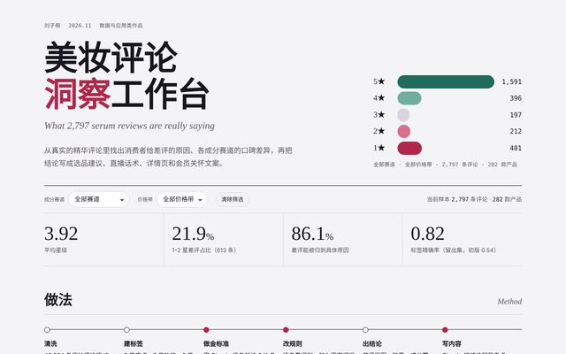

Work you can open and try.
Interactive models that show how I reason through a problem, dashboards and tools you can open straight away, and short animations that explain my research. Each one links back to the internship or project behind it.
Drag the sliders to see the reasoning at work
Dashboards and tools that open in one click

Beauty Review Insights Workbench
Cleans 40,324 public Sephora reviews into 2,797 serum reviews (282 products, 89 brands), filterable by pain point, benefit and skin type; spot-checked rule precision rose from 0.54 to 0.82, with a compliance-wording checker.
Step-by-step animations of how my research works
How the “same resume, different name” audit works
One change at a time (name origin, surname spelling, work rights, employer type), scored repeatedly by models from 8 developers, with a built-in check question and a ±2-point equivalence band fixed in advance.
Watch the animation →How GraphRAG looks for evidence differently
A made-up ESG question shows why ranking passages by similarity can mix scopes and years, while following a graph keeps the same indicator.
Watch the animation →